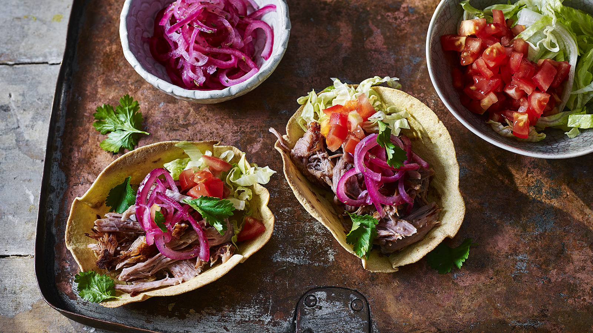

Pulled pork tacos

Pulled Pork Tacos
This is one of my favorite recipes and I will share with you how to make it
Ingredients
aka what you gonna need
- Pork belly
- Red cabbage
- Creme Fraiche
- Tacos
- Jalapeno
- Orange juice
Preparation
- Preheat the oven for 220 degrees
- Put the pork belly in deep baking dish, put some orange juice over it
- Wait untill meat is tender and use two forks to pull it
- Prepare tacos on a pan and after they are toasted add creme fraiche and red cabbage